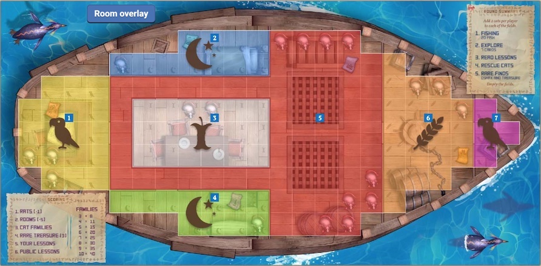

The Isle of Cats
Board Game Arena 官方规则文档
The Isle of Cats is a 1-4 player, card-drafting, polyomino cat-placement board game.
Lore
The legend of an Isle of Cats is real! But it is threatened by the approaching armies of Vesh Darkhand, who will stop at nothing to destroy the island and its feline inhabitants!
You are citizens of Squall’s End and are on a rescue mission to save as many cats as possible before Vesh arrives. You must explore the island, rescue cats, gather ancient treasures and find a way to fit them all onto your boat before returning safely to Squall’s End.
Cats and treasure are represented by tiles of different shapes that you must carefully place onto your boat. Try to keep cat families together, complete lessons, and leave enough room to place the next tile on your boat!
Game Start
All colored cat tiles and Rare Treasure tiles are placed in a bag. Six Oshax cat tiles and all available Common Treasure tiles (based on player count) are arranged below the central island.
Tiles are then drawn randomly from the bag until there are 2 cat tiles per player in each of the fields to the left and the right of the central island.
Any rare treasure tiles drawn are placed below the island.
Each player starts the game with a boat and one permanent basket.
Phases
The Isle of Cats is played over 5 days (rounds).
On each day the cats will venture into the fields on the island and you have until nightfall to attempt to rescue them through 5 phases of play.
Note: A Round Summary reference card is located in the top right corner of each boat. Hover over the card to display its details.
Phase 1. Fishing
Each player gains 20 fish.
Phase 2. Explore (Drafting)
Each player is dealt 7 Discovery cards. Choose and keep 2, passing the remaining cards to the next player. Repeat this process three more times (keep two, pass the rest). Finally, the last card passed to you will be kept, giving each player a 7-card draft.
You will then look at your 7 cards and decide which to buy and keep. The cost for each card is displayed in its top left corner. If you wish to keep a card, it must be paid for in fish.
You can keep (buy) as many cards as you want from the draft, and you can have as many cards in your hand as you'd like. Any cards not purchased during the draft are discarded from the game.
During subsequent rounds, you will pass in the opposite direction; switching from clockwise to counter-clockwise and back again. The direction that cards will be passed is indicated by the colored cats at the top of the player panels.
Phase 3. Read (Display) Lessons
Every blue Lesson card you kept and purchased will now be placed on the table.
Public Lesson cards are placed face up for all players to see. If the Public Lesson says "pick a color", the person playing the card must declare a color when it is played. A cat of that color will be placed on the card. Public Lesson cards are objectives that anyone can achieve and allow all players to score extra points at the end of the game.
Non-public Lesson cards are personal objectives and are visible and achievable only to you. The quantity of private Lesson cards is public knowledge, but their contents are kept secret. Private Lesson cards allow you to score extra points at the end of the game.
Strategy Tip: This phase is the only time that Lesson cards can be played from your hand to the table. Be careful not to acquire additional cards (e.g., using an Anytime card) too late in the last round!
Phase 4. Rescue Cats
Now players take turns to rescue cats. Each cat requires a basket and a number of fish.
Strategy Tip: Fish are used as currency to both buy cards and to rescue cats. You must find a balance between how many cards you buy in the Explore phase and how many cats you wish to rescue in the Rescue phase!
You must declare, in turn order, which (and how many) green Rescue cards that you will be using during this round's Rescue phase. You are not required to use all of your Rescue cards in any given turn. In fact, you may choose to hold onto baskets if you do not have the necessary fish to buy cat tiles, or if you have an odd number of broken baskets.
Turn order
Playing Rescue cards also affects the turn order for all players. Many Rescue cards have a Speed Value represented by a pair of boots and a speed number. Once all players have declared their Rescue cards for the round, the Rescue cards are revealed (turned over) simultaneously by all players and each player totals their speed values.
Rearrange the player's colored cats on the island's turn order track according to these speed totals, from "fastest" to "slowest". In case of a tie, the players who have the same speed maintain the same turn order in relation to each other on the island.
This change in turn order is immediate, and affects any cards played from this point onwards.
Baskets
There are 3 types of baskets:
Permanent baskets: These can be used once a day. When you use a permanent basket, flip it to the used side to show it has been used. Every player starts with one permanent basket. You can gain extra permanent baskets with cards.
Regular baskets: These can only be used once in the game. Once they have been used, they are discarded.
Broken baskets: You can combine 2 broken baskets to make a regular basket. Just like regular baskets, these can only be used once.
Rescuing cats
Any cat tile to the left of the island will cost you three fish and one basket. Any cat tile to the right of the island will cost you five fish and one basket. (The center island displays "3 <FISH>" and "5 <FISH>" on its left and right sides as a reminder of the cost of a cat tile in each field, respectively.)
To rescue a cat, start by clicking on one of your available baskets: either a permanent basket or your basket card(s). All available cats will be then be displayed, in miniature, at the top of your boat. Select a cat (either in miniature or from one of the fields to the side of the island). Click anywhere on your boat to rescue the cat. Once on your boat, you can flip, rotate, and move the tile into the desired position. Confirm your cat placement to finish your turn.
You can only rescue one cat at a time. Then, following the turn order, it is the next player's turn to rescue a cat. Continue around the table rescuing more cats until everyone has run out of baskets, fish, or passes.
All regular basket cards or broken basket cards that you played this round, whether used to rescue a cat or not, will be discarded.
Tile placement
When you rescue a cat (or obtain any tile) you must immediately place it on your boat. The first cat (or tile) can go anywhere, but after that, every tile (cat or treasure) must touch at least 1 previously played tile. Touching means orthogonally adjacent. Diagonal is not touching.
All tiles can be rotated, flipped, and oriented in any way that helps you fit the tile into open squares on your boat.
If any cat placed on the boat covers a Treasure Map of the same color, the player may take a common treasure from the pool and immediately place it on their boat. The maps can be found in the bedrooms, the deck, the storage room and the captain's room.
Phase 5. Rare Finds
Finally, players will take turns to play yellow Treasure and brown Oshax cards from their hand.
Treasure cards allow you to collect smaller pieces to fill in those tricky areas. Rare Treasure tiles on your boat are worth 3 points at the end of the game.
Oshax are friendly cats that can act as any color. When you play an Oshax card select any one Oshax cat tile from below the island. Gaining an Oshax cat does not require the use of a basket nor does it cost you any fish.
When you place an Oshax on your boat, you must immediately choose which color of cat it will "befriend". A cat of that color will be placed on the Oshax. The Oshax counts as both an Oshax and a cat of the chosen color for the rest of the game.
End-of-round clean-up
At the end of each day, any cats that weren't rescued from the fields scurry away and are removed from the game. Unclaimed treasures (common and rare) are not removed and remain below the island. Draw new tiles from the bag until there are 2 cat tiles per player in each field to the left and the right of the central island. Any rare treasure tiles drawn are placed below the island.
The day tracker at the bottom of the island is updated by moving Vesh’s boat 1 space forward. If Vesh’s boat reaches the hand symbol, Vesh has arrived and it’s time for all boats to set sail with their cats back to Squall’s End! Proceed to scoring. Otherwise, each player flips their permanent baskets back to their active side and the next day begins.
Any unplayed cards remain in your hand for the next day. You do not have to pay for them again and there is no limit to how many cards you may have in your hand. Any fish you have not used are kept and carry over to the next day.
Game End
After 5 days (rounds), you will earn points for: completed lesson cards, rare treasures, and families of cats (groups of touching cats of the same color) on your boat.
However, you will lose points for: each room on your boat which isn’t completely filled and any rats which haven’t been eaten (i.e., covered up)!
The winner is the player with the most points at the end of the game!
Boats
Each player has their own boat containing 7 rooms, 19 rats, and 5 colored treasure maps. This is where you will be placing every cat you rescue and any treasure you find.
When you rescue a cat (or obtain any tile) you must immediately place it on your boat. The first cat (or tile) can go anywhere, but after that, every tile (cat or treasure) must touch at least 1 previously played tile. Touching means orthogonally adjacent. Diagonal is not touching.
The edge of the boat is the thick white line that frames the grid of squares on each boat.
Tiles cannot overlap and cannot extend outside of the boat's edge.
Rooms
There are 7 rooms on each boat and every square on your boat is part of a room. You can identify rooms by the walls surrounding them. Six of the seven rooms can also be identified by the icons located in the corner of each square. The room with no icons (#5, the Deck, shown in red) still counts as a room.
Note: Click the Room overlay button to display a set of larger, colored icons on your boat for easier room identification.

Room details
| Room # | Location | Icon | Overlay/Icon Color | Size | Type |
| 1 | Stern | Parrot | Yellow | 18 squares | Captain's Room |
| 2 | Port | Crescent Moon & Star | Blue | 11 | Bedroom |
| 3 | Amidships | Apple core | White | 18 | Dining Room |
| 4 | Starboard | Crescent Moon & Star | Green | 11 | Bedroom |
| 5 | Amidships | none | Red | 60 | Deck |
| 6 | Fore | Grain | Orange | 20 | Storage Room |
| 7 | Bow | Parrot | Magenta | 4 | Captain's Room |
Note: There are two Bedrooms and two Captain's Rooms on each boat.
Treasure maps
Your boat contains five colored treasure maps that can be used to obtain Common Treasures.
If you place a cat tile on a treasure map icon and the colors match (e.g., a green cat on green treasure map), you may immediately take any one of the four common treasures and place it on your boat.
The four Common Treasures are located directly below the island and are: one square, two squares, and three squares in size.
You can place other tiles over a treasure map, but you will not receive the bonus Common Treasure.
Anytime Cards
Purple Anytime cards can be used at ... any time!
To maintain a faster game play experience, you can alter when you want the game to ask you if you want to play an Anytime card.
Anytime cards can always be played on your turn during the Rescue and Rare Finds phases. They can also be played before or after specific points in the game, if desired.
You can change when the game will ask you to play Anytime cards by clicking on the "When to play" button. The button is only displayed on Anytime cards that can impact other players.
Click the gear icon in your player panel for more options related to this button and for other ways to speed up game play (e.g., "Auto pass: Enabled").
Treasure Reference
Rare Treasures are uniquely shaped tiles that are placed below the island when drawn from the bag prior to each day. You collect Rare Treasure tiles by playing yellow Treasure cards during the Rare Finds phase. Each Rare Treasure tile on your boat is worth 3 points at the end of the game. Since tiles are drawn at random from the bag, the quantity of Rare Treasure tiles made available throughout the game will vary. (They are rare, right?)
All Common Treasures are distributed below the island at the start of the game. Common Treasure do not add to your score but are helpful in filling in small open spaces to completely cover a room to avoid a scoring penalty (-5 points) at the end of the game.
Common Treasures are: one square, two squares, and three squares in size. Common Treasure are limited in quantity and often run out! Common Treasures can be collected by covering a Treasure Map with a matching colored cat or by using some yellow Treasure cards.
Small Treasures, when referenced by a card, include only the two smallest Common Treasures: one square and two squares.
Color Reference
Lesson cards are BLUE.
Rescue cards are GREEN.
Oshax cards are BROWN.
Treasure cards are YELLOW.
Anytime cards are PURPLE.
Note: Click the Color reference button (bottom of the table layout) to display reference cards for the five cat colors (blue, green, orange, purple, red) and treasure map colors.
Size Reference
Oshax Cat tiles are: 6 squares in size.
Colored Cat tiles are: 4, 5, & 6 squares in size.
Rare Treasure tiles are: 4 squares in size.
Common Treasure tiles are: 1, 2, & 3 squares in size.
Small Treasure tiles are the two smallest Common Treasure tiles: 1 & 2 squares in size.
Term Reference
Cat Families: A cat family is 3 or more cats of the same color that are touching each other on your boat. Oshax cats count as colored cats and will contribute to a cat family's size.
Touching: Tiles are said to be touching if they are orthogonally adjacent. Diagonal is not touching.
Lonely Cat: A cat is a lonely cat if it is not touching another cat of the same color. It can be touching other tiles, just not another cat tile of the same color as itself. Oshax cats count as colored cats and therefore can qualify as a lonely cat, and can disqualify another cat from being lonely if they are of the same color and touching.
Treasures: When counting treasures, all types and sizes of treasure tiles should be included: Rare and Common.
Captain's Rooms: There are two Captain's Rooms. One in the bow and the other in the stern. Both have squares marked with a Parrot icon.
Bedrooms: There are two Bedrooms. One on the port side and the other on the starboard side. Both have squares marked with a Crescent Moon & Star icon.
In front of you: This refers to cards in your own personal play area and includes your private Lesson cards but not Public Lesson cards.
Full: A room is considered full if none of the squares containing its icon can be seen: every square has been covered by a tile.
Empty: A room is empty only if all of its squares are uncovered. A room that has some of its squares covered is neither full nor empty.
Rare Finds: During Phase 5 you may be instructed that "You must take a rare find or pass". This means you have the option to play your yellow Treasure cards and your brown Oshax cards.
Scoring
At the end of the game, players should add up their score. The player with the highest score wins.
Note: A Scoring reference card is located in the bottom left corner of each boat. Hover over the card to display its contents.
Rats: You get -1 point for each visible rat on your boat.
Rooms: You get -5 points for each room that has not been filled.
Cat Families: You get points for each cat family you have:
| Cats | Points |
| 3 | 8 |
| 4 | 11 |
| 5 | 15 |
| 6 | 20 |
| 7 | 25 |
| 8 | 30 |
| 9 | 35 |
| 10 | 40 |
Rare Treasures: You get 3 points for every Rare Treasure on your boat. (Common Treasures do not score points.)
Lessons: Reveal each private Lesson card you have. If you have completed the lesson, add those points to your score.
Public Lessons: Check each Public Lesson card and add the points from any completed cards to your score
Tiebreaker
In the case of a tie, the player with the most fish wins (they remembered their cats might want a snack on the way home). If the tied players have the same number of fish, then both players win.
Base Game Variants
The base game comes with two variants, namely the family and the solo variants. Any differences between the base game and the variant will be discussed below.
Family variant
This variant simplifies the game into it only having a lesson phase and a rescue phase. This mode is useful for new players who are not very familiar with this game.
Setup phase
The turn order for the first round is determined randomly at the start of the game. This order will change with each round, where the first player in turn order in one round will become the last player in turn order in the next round, with the second player in turn order becoming the first player and so on.
Before the first rescue phase, 3 Family cards will be dealt to each player. Choose 2 and discard the other. These will be your Private Lesson cards for the rest of the game, and no other Lesson cards will be drawn. After everyone has chosen their lessons, the rescue phase can begin.
Rescue phase
This will be the only round phase for the rest of the game. Similar to the base game, cats will be drawn until there 4 cats per player, with any Rare Treasures set aside. These cat tiles are randomly placed around the island.
Beginning with the start player, players take turns to pick cat tiles from the pool until none are left or everyone passes. If you pass, you cannot pick up tiles for the rest of the round. Tile placement of the cat tiles follows the same rules, with treasure maps functioning as usual too. After the rescue phase is over, proceed to the next rescue phase until the end of round 5, which is when scoring will occur.
Scoring
The only changes to scoring boats are that there are no Rare Treasure or Public Lesson points, and the family Lesson cards can be scored under Private Lessons.
Solo variant
"If the approaching armies of Vesh Darkhand weren’t bad enough, you now notice your sister has snuck aboard your boat and is trying to claim credit for all your hard work. Not only do you need to rescue cats and avoid Vesh, but now you will have to also sabotage your sister’s plans in order to succeed!"
This mode has multiple difficulties, as explained below. Any lesson cards which may be confusing for the sister setup are given at the end of this section.
Initial setup
Only the Oshax setup changes for the player setup.
6 Oshax tiles will be placed in a random order in a horizontal line, where the number of the tile is denoted by its position along the line (eg Oshax 1 is on the far left and Oshax 5 is one left from the rightmost tile).
Sister setup
Solo color cards are shuffled and placed in a horizontal line, where they will be revealed left to right, one card per round. Make sure to keep track of the color order, as colors revealed earlier in the game benefit your sister more!
The sister will also have Solo lessons, which will be affected by what is placed on your boat. The easy difficulty will have 3 solo lessons, and the number of additional advanced lessons will increase depending on the difficulty. This ranges from 1 advanced lesson for Medium, up to 4 advanced lessons for Expert.
Start of the round
Fields on either side of the island will have 4 cats, with any rare treasure tiles drawn placed in a line, with the first tile drawn called 'Rare 1', the second rare tile called 'Rare 2' and so on. Drawn cat tiles will also need to be placed in a line so that they can be numbered from left to right. As opposed to the base game, identical Rare treasures are not stacked on one another.
The player will receive a boat, 20 fish at the start of the round, as well as a permanent basket - same as multiplayer.
Explore/Lesson Phases
The player receives the first 5 Discovery cards from the deck and chooses 3. The other two are placed into a discard pile. This is then repeated a second time, then finally the top card from the deck is drawn and added to the 6 cards already in their hand. Card buying works the same way as multiplayer.
The lesson phase is exactly the same, apart from the fact that public lessons only give 50% of the points to the player, rounded up.
Rescue Phase
Here your Sister is trying to steal tiles from the pool! Make sure she doesn't take the tiles you want!
Rescuing cats is the same for the player, but the turn order is dependent on your sister's speed.
Rescue phase for your sister
For your sister, the first solo basket card is drawn, which determines how many cards your sister will have during this phase as well as the turn order. If the card has a basket value over 1, draw solo basket cards until the number of cards is equal to the number of baskets. The speed value on the first card will determine your sister's speed and hence turn order.
When resolving the solo basket cards, determine which tiles are taken from the pool by the number on the card (Reminder: Leftmost tile is labelled as 1). If the rightmost tile is not taken, shift the tile numbers accordingly without changing the tile order (eg if tile 2 is taken, tile 6 becomes tile 5). If the tile number shown on the card does not exist (number is too large), take the last numbered tile of that type.
Keywords for resolving cards:
Cat 4 - Take the 4th cat from the island and remove it from the game.
Rare 5 - Take the 5th rare treasure and remove it from the game.
Oshax 2 - Take the 2nd Oshax and remove it from the game.
Switch 1,4 - Switch cat 1 and cat 4 tiles, so that cat 4 is now cat 1 and vice versa.
Common treasure icon - Take a common treasure identical to what is shown on the card and remove it from the game. After the player cannot rescue any more cats or passes, move onto rare finds.
Rare finds
This phase is the same, with your sister not doing anything for this phase. If all Oshax tiles are taken out from the pool, any Oshax cards are useless. The same thing applies for the treasure cards.
Start of next round
After each day is over, flip over the next solo color. If all five have been flipped over, the game ends.
Scoring
Scoring is the same for the player, with the sister scoring as follows:
Your sister gains 5 points per cat on the boat for the first revealed solo color. This number of points decreases to 4 points per cat for the second revealed color and so on, until your sister gains 1 point per cat of the final revealed color. This will be the cat color score.
Your sister's cat color score is then combined with the total score from your sister's lesson cards to obtain a final score.
The winner is the person with the most points. If there is a tie, your sister wins.
Other information
Solo lesson cards, which may be confusing, are given below. This list will grow if necessary.
The highest scoring lesson scores twice - This applies to the solo lessons and not the private/public lessons played by the player.
5 points for every cat over 15 - If more than 15 cats have been placed on the boat (including Oshax), this solo lesson will score points (e.g. 17 cats will score 10 points to your sister).
5 points for each colour... - This applies to every color of cat, not just for the ones founds on your boat (e.g. no purple cats on your boat is an automatic 5 points to your sister).